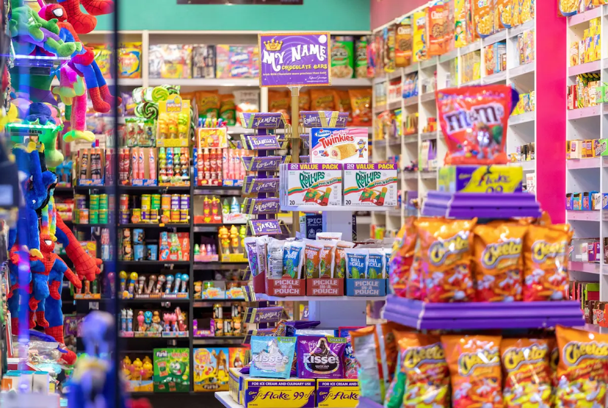
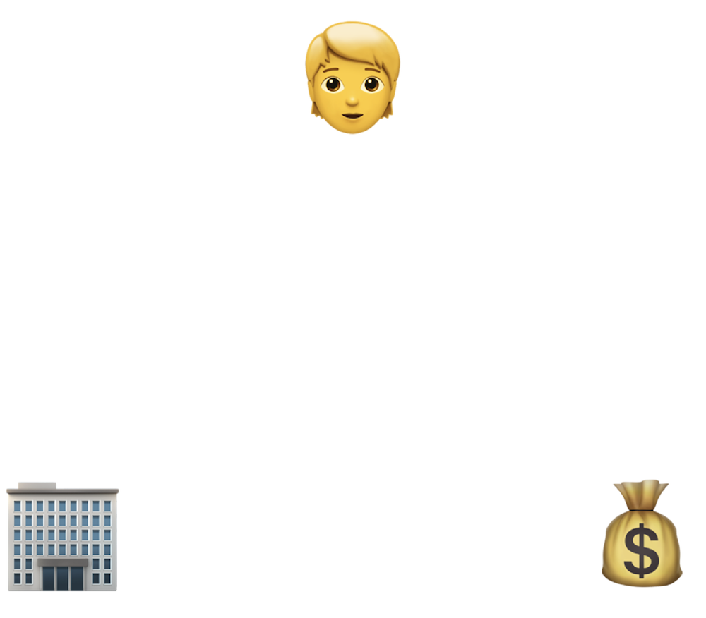
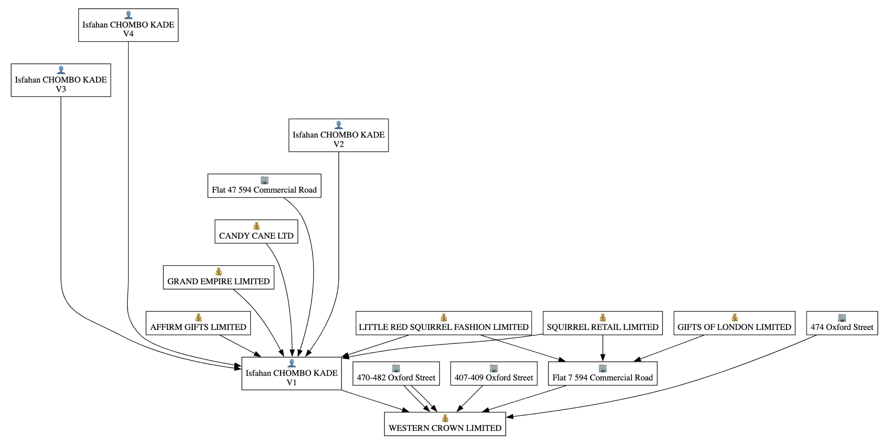
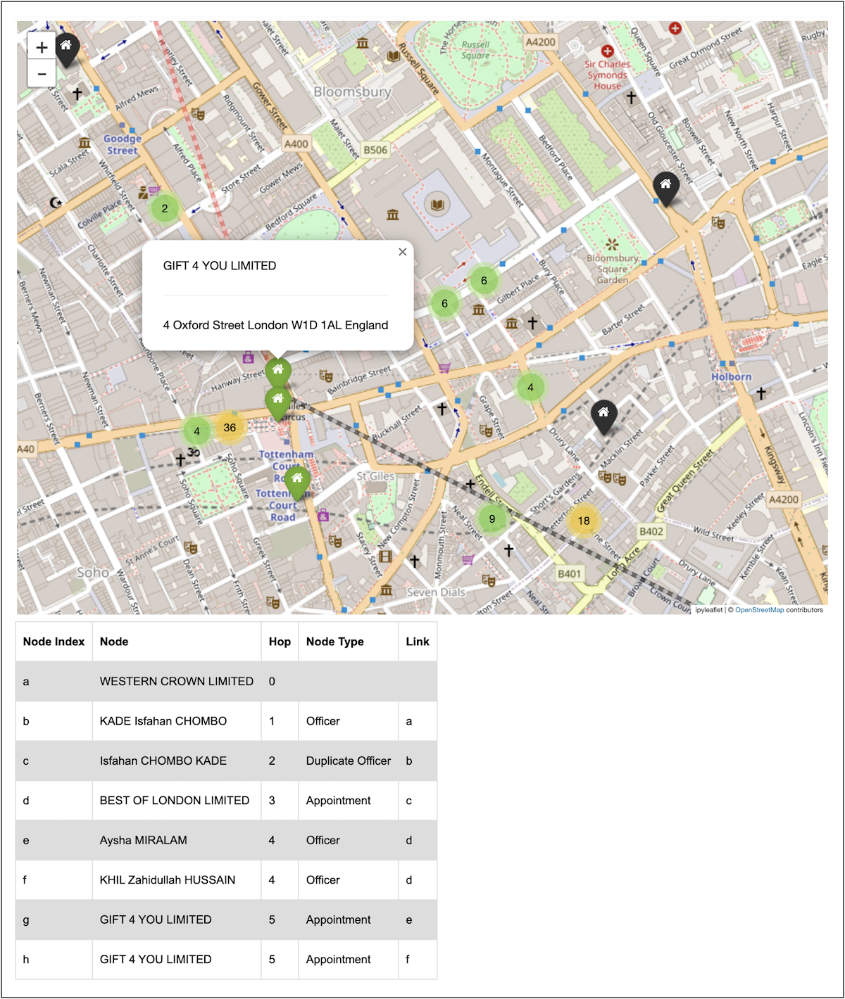
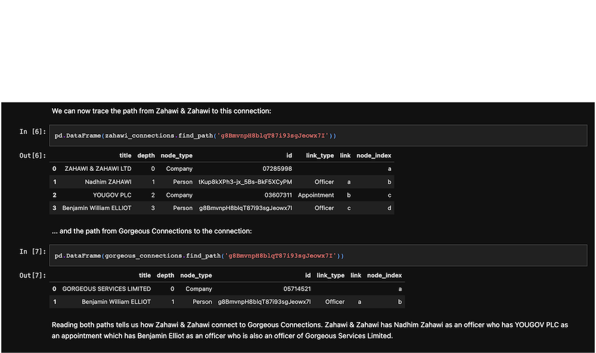

Sugartrail
Sugatrail is a network analysis and visualisation tool developed to empower OSINT researchers to navigate corporate ownership networks using data from the UK Companies House register with greater ease and agility. The tool was developed within a self-directed 2-month tech fellowship awarded by the investigative journalism group Bellingcat and funded by the Alfred Landecker Foundation.
I was motivated to develop this tool after becoming fascinated with the cluster of American candy stores that popped up on post-pandemic Oxford Street, investigated for tax evasion and sale counterfeit products. Investigators at the Financial Times analysed Companies House filings for many of the companies and found them to exist as a loose network of ownership with officers moving between companies and companies shifting between a number of common addresses. The complexity and scale of these weird networks and the lack of relevant tools for analysing them led me begin prototyping.

The resulting Python-based tool enables users to build networks of companies, officers and addresses connected within a user-specified degrees of seperation. The tool can be used to build networks from a single company as well as for checking if any two companies are connected.




New Reporting Tools to Archive Videos, Find QAnon Networks, and Track Targets via Online Reviews